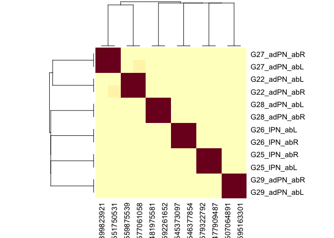

The aedes package provides programmatic access to the in progress Aedes aegypti connectome dataset. Note that this dataset is still in an early state of proofreading and annotation and access is currently in a limited pre-release testing phase as we develop a robust community and infrastructure.
Implementation Details
The package is delivered as a thin wrapper around fafbseg with optional registration for coconatfly. This will be familiar to users of the fancr and bancr packages.
As a CAVE package you must have access and an appropriate token recorded. Metadata for this project is stored in a seatable web-accessible database accessed via fafbseg::flytable_* functions which are wrapped by this package.
CAVE datasets have a concept of the active materialisation version which defines the state of the segmentation used for analysis. Alternatively a timestamp can be specified to allow an exact point in time to be used.
Installation
The package must be installed from github:
if (!requireNamespace("natmanager", quietly = TRUE)) {
install.packages("natmanager")
}
natmanager::install(pkgs = "flyconnectome/aedes")You also need to do some additional one time setup.
Access to the segmentation / connectivity information is via CAVE. We use the python CAVE client under the hood and this must be installed via simple_python(). Authentication is via a token, which is typically shared across CAVE projects (e.g. flywire, FANC, BANC etc). You can make a new one linked to the email address authorised to access web resources via neuroglancer.
In order to start using flytable, you must get an API token. There doesn’t seem to be a convenient way to do this from the seatable web interface but you can get one by calling flytable_set_token() with your flytable user and password. This should be a once only step. Thereafter you should have a FLYTABLE_TOKEN environment variable set in your .Renviron file.
# required
fafbseg::simple_python()
# Will open browser to get new token
fafbseg::flywire_set_token()
# Writes a known token to correct location
fafbseg::flywire_set_token("2f88e16c4f21bfcb290b2a8288c05bd0")
fafbseg::flytable_set_token()Setup for coconatfly
We recommend using coconatfly for most analysis. At the moment you must tell coconatfly about the aedes dataset once per R session.
library(aedes)
library(coconatfly)
# once per session
register_aedes_coconat()Examples
library(dplyr)
# 1) List neurons with class ALPN
alpn_meta <- cf_meta(cf_ids(aedes = "/class:ALPN"))
alpn_meta %>% count(subclass, subsubclass)
#> subclass subsubclass n
#> 1 ALPN BI_MUL 21
#> 2 ALPN BI_UNI 8
#> 3 ALPN II_MUL 214
#> 4 ALPN II_UNI 329Select a smaller set of PN neurons with type matching G2X
gpn_ids <- cf_meta(cf_ids(aedes = "/type:G2[0-9].*PN"))
#> Updating 3 ids
#> Updating 245 ids
gpn_meta <- cf_meta(gpn_ids)
#> Updating 245 ids
gpn_meta %>% count(type, side) %>% tidyr::spread(side, n)
#> type L R
#> 1 G20_lPN 2 2
#> 2 G21_lPN 3 3
#> 3 G22_adPN 1 1
#> 4 G23_lPN 3 3
#> 5 G24_lPN 2 2
#> 6 G25_lPN 1 1
#> 7 G26_lPN 1 1
#> 8 G27_adPN 1 1
#> 9 G28_adPN 1 1
#> 10 G29_adPN 1 1
#> 11 G29_lvPN 1 NANow we can cluster by connectivity. This depends on partner neurons having some kind of identity recorded, typically via the type column (the default) or the numeric group column (which is often set even when a formal type has not been proposed). At the time of writing PN input partners (ORNs) are well typed but downstream partners less so. So let’s just use input partners and also restrict to neurons that have already been typed with n=2 neurons in the type so that we have a small plot.
gpn_meta %>%
add_count(type) %>%
filter(n==2) %>%
cf_cosine_plot(partners = 'in')
#> Updating 245 ids
#> Updating 245 ids
#> Warning in coconat::partner_summary2adjacency_matrix(x[["inputs"]], inputcol =
#> groupcol, : Dropping: 940/1320 neurons representing 12245/27020 synapses due to
#> missing ids!
#> Updating 245 ids
There are a wealth of options for the clustering. You can select input partners only or using the group column rather than type for defining the neuron-type connectivity matrix. You can turn off partner grouping (which can actually work better in some circumstances when there is limited partner type information available) but you will not be able to co-cluster L and R homologues.
cf_cosine_plot(gpn_ids, heatmap = T, partners = 'in')
cf_cosine_plot(gpn_ids, heatmap = T, partners = 'in', group = 'group')
cf_cosine_plot(gpn_ids, heatmap = T, partners = 'in', group = FALSE)The default threshold setting of 5 synapse may be a little restrictive for this dataset where synapses counts seem to be low (even without considering proofreading).
cf_cosine_plot(gpn_ids, heatmap = T, partners = 'in', group = FALSE, threshold = 2)
#> Updating 245 ids
#> Updating 245 ids
#> Updating 245 ids